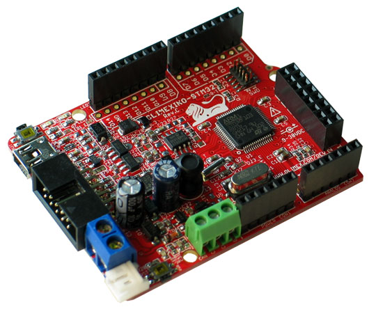
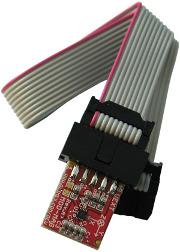
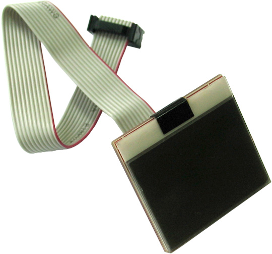
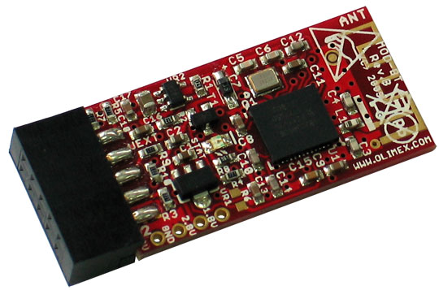

human-sensors
Collecting data from different sensors
This was part of a project for a "dream study". The device was battery powered so the patient could stay at home in his normal environment. The data sampled could be written on sd-card or transfered via bluetooth.
Sensors included:
- 3-axis leg sensors
- ECG
- 8-channel EEG
- EMG
- EOG
- 3-axis accelerometer for general movement
Hardware setup:

Olimex Olimexino-STM32 board with STM32F103RBT6 microcontroller

Olimex MOD-MAG 3-axis magnetometer MAG3110

Olimex MOD-LCD3310 Nokia 3310 LCD display

Olimex MOD-BT bluetooth module

Olimex SHIELD-ECG-EMG ECG/EMG shield for STM32 board